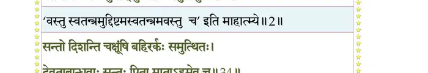
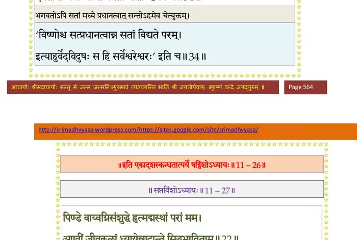

स्कन्ध 11 · अध्याय 26
श्लोक १
श्रीभगवानुवाच–
मल्लक्षणमिमं कायं लब्ध्वा मद्धर्ममास्थितः ।
आनन्दं परमात्मानमात्मस्थं समुपैति माम्।। १ ।।
मल्लक्षणमिमं कायं लब्ध्वा मद्धर्ममास्थितः ।
आनन्दं परमात्मानमात्मस्थं समुपैति माम्।। १ ।।
श्लोक २
गुणमय्या जीवयोन्या विमुक्तो ज्ञाननिष्ठया ।
गुणेषु मायामात्रेषु दृश्यमानेष्ववस्तुतः ।
वर्तमानोऽपि न पुमान् युज्यतेऽवस्तुभिर्गुणैः।। २ ।।
गुणेषु मायामात्रेषु दृश्यमानेष्ववस्तुतः ।
वर्तमानोऽपि न पुमान् युज्यतेऽवस्तुभिर्गुणैः।। २ ।।
भागवततात्पर्यनिर्णय

श्लोक ३
सङ्गं न कुर्यादसतां शिश्नोदरतृपां क्वचित् ।
तस्यानुगस्तमस्यन्धे पतत्यन्धानुगोऽन्धवत् ।। ३ ।।
तस्यानुगस्तमस्यन्धे पतत्यन्धानुगोऽन्धवत् ।। ३ ।।
श्लोक ४
ऐलः सम्राडिमां गाथामगायत बृहच्छ्रवाः ।
उर्वशीविरहान्मुह्यन् निर्विण्णः शोकसंयुतः ।। ४ ।।
उर्वशीविरहान्मुह्यन् निर्विण्णः शोकसंयुतः ।। ४ ।।
श्लोक ५
त्यक्त्वाऽऽत्मानं व्रजन्तीं तां नग्न उन्मत्तवन्नृपः ।
विलपन्नन्वगाज्जाये घोरे तिष्ठेति विक्लवः ।। ५ ।।
विलपन्नन्वगाज्जाये घोरे तिष्ठेति विक्लवः ।। ५ ।।
श्लोक ६
कामानतृप्तोऽनुजुषन् क्षुल्लकान् वर्षयामिनीः ।
न वेद गणनां यान्तीमुर्वश्याऽऽकृष्टचेतनः ।। ६ ।।
न वेद गणनां यान्तीमुर्वश्याऽऽकृष्टचेतनः ।। ६ ।।
श्लोक ७
ऐल उवाच–
अहो मे मोहविस्तारः कामकश्मलचेतसः ।
देव्या गृहीतकण्ठस्य नायुः खण्डा अनुस्मृताः ।। ७ ।।
अहो मे मोहविस्तारः कामकश्मलचेतसः ।
देव्या गृहीतकण्ठस्य नायुः खण्डा अनुस्मृताः ।। ७ ।।
श्लोक ८
नाहं वेदाभिनिर्मुक्तः सूर्येणाभ्युदितो मृषा ।
मुषितो वर्षपूगानां बताहानि गतान्युत ।। ८ ।।
मुषितो वर्षपूगानां बताहानि गतान्युत ।। ८ ।।
श्लोक ९
अहो मे आत्मसम्मोह येनात्मा योषिता हृतः ।
क्रीडामृगश्चक्रवर्ती नरदेवशिखामणिः ।। ९ ।।
क्रीडामृगश्चक्रवर्ती नरदेवशिखामणिः ।। ९ ।।
श्लोक १०
सपरिच्छदमात्मानं हित्वा तृणमिवेश्वरम् ।
यान्तीं स्त्रियं चान्वगमं नग्न उन्मत्तवद् रुदन् ।। १० ।।
यान्तीं स्त्रियं चान्वगमं नग्न उन्मत्तवद् रुदन् ।। १० ।।
श्लोक ११
कुतस्तस्यानुभावः स्यात् तेज ईशित्वमेव वा ।
योऽन्वगच्छं स्त्रियं यान्तीं स्मरबाणविताडितः ।। ११ ।।
योऽन्वगच्छं स्त्रियं यान्तीं स्मरबाणविताडितः ।। ११ ।।
श्लोक १२
किं विद्यया किं तपसा किं त्यागेन श्रुतेन वा ।
किं विविक्तेन मौनेन स्त्रीभिर्यस्य मनो हृतम् ।। १२ ।।
किं विविक्तेन मौनेन स्त्रीभिर्यस्य मनो हृतम् ।। १२ ।।
श्लोक १३
स्वार्थस्याकोविदं धिङ् मां मूर्खं पण्डितमानिनम् ।
योऽहमीश्वरतां प्राप्य स्त्रीभिर्गोखरवज्जितः ।। १३ ।।
योऽहमीश्वरतां प्राप्य स्त्रीभिर्गोखरवज्जितः ।। १३ ।।
श्लोक १४
सेवतो वर्षपूगान्मे उर्वश्या अधरासवम् ।
न तृप्त आत्मभूः कामो वह्निराहुतिभिर्यथा ।। १४ ।।
न तृप्त आत्मभूः कामो वह्निराहुतिभिर्यथा ।। १४ ।।
श्लोक १५
पुंश्चल्याऽपहृतं चित्तं को न्वन्यो मोचितुं प्रभुः ।
आत्मारामेश्वरमृते भगवन्तमधोक्षजम् ।। १५ ।।
आत्मारामेश्वरमृते भगवन्तमधोक्षजम् ।। १५ ।।
श्लोक १६
बोधितस्यापि देव्या मे सूक्तवाक्येन दुर्मतेः ।
मनोगतो महामाहो नापयात्यजितात्मनः ।। १६ ।।
मनोगतो महामाहो नापयात्यजितात्मनः ।। १६ ।।
श्लोक १७
किं न्वेतया म एकान्ते रज्ज्वां वै सर्पचेतसः ।
द्रष्टुः स्वरूपाविदुषो योऽहं यदजितेन्द्रियः ।। १७ ।।
द्रष्टुः स्वरूपाविदुषो योऽहं यदजितेन्द्रियः ।। १७ ।।
श्लोक १८
क्वायं मलीमसः कायो दौर्गन्धाद्यात्मकोऽशुचिः ।
क्व गुणाः सौमनस्याद्या ह्यध्यासोऽविद्यया कृतः ।। १८ ।।
क्व गुणाः सौमनस्याद्या ह्यध्यासोऽविद्यया कृतः ।। १८ ।।
श्लोक १९
पित्रोः किं स्विन्नु भार्यायाः स्वामिनोऽग्नेः श्वगृध्रयोः ।
किमात्मनः किं सुहृदामिति यो नावसीयते ।। १९ ।।
किमात्मनः किं सुहृदामिति यो नावसीयते ।। १९ ।।
श्लोक २०
तस्मिन् कलेवरेऽमेध्ये तुच्छनिष्ठे विषज्जते ।
अहो सुभद्रं सुनसं सुस्मितं च मुखं स्त्रियः ।। २० ।।
अहो सुभद्रं सुनसं सुस्मितं च मुखं स्त्रियः ।। २० ।।
श्लोक २१
त्वङ्मांसरुधिरस्नायुमेदोमज्जास्थिसंहतौ ।
विण्मूत्रपूये रमतां कृमीणां कियदन्तरम् ।। २१ ।।
विण्मूत्रपूये रमतां कृमीणां कियदन्तरम् ।। २१ ।।
श्लोक २२
अथापि नो विषज्जेत स्त्रीषु स्त्रैणेषु चार्थवित् ।
विषयेन्द्रियसंयोगान्मनः क्षुभ्यति नान्यदा ।। २२ ।।
विषयेन्द्रियसंयोगान्मनः क्षुभ्यति नान्यदा ।। २२ ।।
श्लोक २३
अदृष्टादश्रुताद् भावान्न भाव उपजायते ।
असंप्रयुञ्जतः प्राणान् शाम्यति स्तिमितं मनः ।। २३ ।।
असंप्रयुञ्जतः प्राणान् शाम्यति स्तिमितं मनः ।। २३ ।।
श्लोक २४
तस्माद् सङ्गो न कर्तव्यः स्त्रीषु स्त्रैणेषु चेन्द्रियैः ।
विदुषां चाप्यविश्रभ्यः षड्वर्गः किमु मादृशाम् ।। २४ ।।
विदुषां चाप्यविश्रभ्यः षड्वर्गः किमु मादृशाम् ।। २४ ।।
श्लोक २५
श्री भगवानुवाच–
एवं प्रगायन् नृपदेवदेवः स उर्वशीलोकमथो विहाय ।
आत्मानमात्मन्यवगम्य मां वै उपारमज्ज्ञानविधूतमोहः।। २५ ।।
एवं प्रगायन् नृपदेवदेवः स उर्वशीलोकमथो विहाय ।
आत्मानमात्मन्यवगम्य मां वै उपारमज्ज्ञानविधूतमोहः।। २५ ।।
श्लोक २६
ततो दुःसङ्गमुत्सृज्य सत्सु सज्जेत बुद्धिमान् ।
सन्त एवास्य छिन्दन्ति मनोव्यासङ्गमुक्तिभिः ।। २६ ।।
सन्त एवास्य छिन्दन्ति मनोव्यासङ्गमुक्तिभिः ।। २६ ।।
श्लोक २७
सन्तोऽनपेक्षा मच्चिताः प्रशान्ताः समदर्श(र्शिनः)नाः ।
निर्ममा निरहङ्कारा निर्दन्द्वा निःपरिग्रहाः ।। २७ ।।
निर्ममा निरहङ्कारा निर्दन्द्वा निःपरिग्रहाः ।। २७ ।।
श्लोक २८
तेषु नित्यं महाभाग महाभागेषु मत्कथाः ।
सम्भवन्ति हिता नॄणां जुषतां प्रपुनन्त्यघम्।। २८ ।।
सम्भवन्ति हिता नॄणां जुषतां प्रपुनन्त्यघम्।। २८ ।।
श्लोक २९
ता ये शृण्वन्ति गायन्ति ह्यनुमोदन्ति चादृताः ।
मत्पराः श्रद्धधानाश्च भक्तिं विन्दन्ति ते मयि।। २९ ।।
मत्पराः श्रद्धधानाश्च भक्तिं विन्दन्ति ते मयि।। २९ ।।
श्लोक ३०
भक्तिं लब्धवतः साधो किमन्यदवशिष्यते ।
मय्यनन्तगुणे ब्रह्मण्यानन्दानुभवात्मनि।। ३० ।।
मय्यनन्तगुणे ब्रह्मण्यानन्दानुभवात्मनि।। ३० ।।
श्लोक ३१
यथोपाश्रयमाणस्य भगवन्तं विभावसुम् ।
शीतं भयं तमो व्येति साधुं संसेवतस्तथा।। ३१ ।।
शीतं भयं तमो व्येति साधुं संसेवतस्तथा।। ३१ ।।
श्लोक ३२
निमज्योन्मज्जतां घोरे भवाब्धौ ते परायणम् ।
सन्तो ब्रह्मविदः शान्ता नौर्दृढेवाप्सु मज्जताम्।। ३२ ।।
सन्तो ब्रह्मविदः शान्ता नौर्दृढेवाप्सु मज्जताम्।। ३२ ।।
श्लोक ३३
अन्नं हि प्राणिनां प्राणं (प्राणः) आर्तानां शरणं त्वहम् ।
धर्मो वित्तं नृणां प्रेत्य सन्तोऽतो बिभ्यतोऽरणम्।। ३३ ।।
धर्मो वित्तं नृणां प्रेत्य सन्तोऽतो बिभ्यतोऽरणम्।। ३३ ।।
श्लोक ३४
सन्तो दिशन्ति चक्षूंषि बहिरर्कः समुत्थितः ।
देवता बान्धवाः सन्तः पिता माताऽहमेव च।। ३४ ।।
देवता बान्धवाः सन्तः पिता माताऽहमेव च।। ३४ ।।
भागवततात्पर्यनिर्णय

श्लोक ३५
चेतसेलासुतोऽप्येवमुर्वश्या लोकनिःस्पृहः ।
मुक्तसङ्गो महीमेतामात्मारामश्चचार ह ।। ३५ ।।
मुक्तसङ्गो महीमेतामात्मारामश्चचार ह ।। ३५ ।।
।। इति श्रीमद्भागवते एकादशस्कन्धे षड्विंशोऽध्यायः ।।